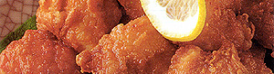

Salat mit knusper Basilikum und Chicken-Nuggets
3,5 von 6cashew-nuts und basilikum in wenig olivenöl braten. die basilikumblätter ganz lassen und sehr
knusprig werden lasssen. teller mit salatblätter belegen. pepperoni streifen, tomaten, und evtl.
gurken auf den salatblättern verteilen. den basilikum und die cashew-nuts darüber geben. ital. salatsauce.
chicken-nuggets
tiefgekühlt in pfanne geben und goldbraun braten.
